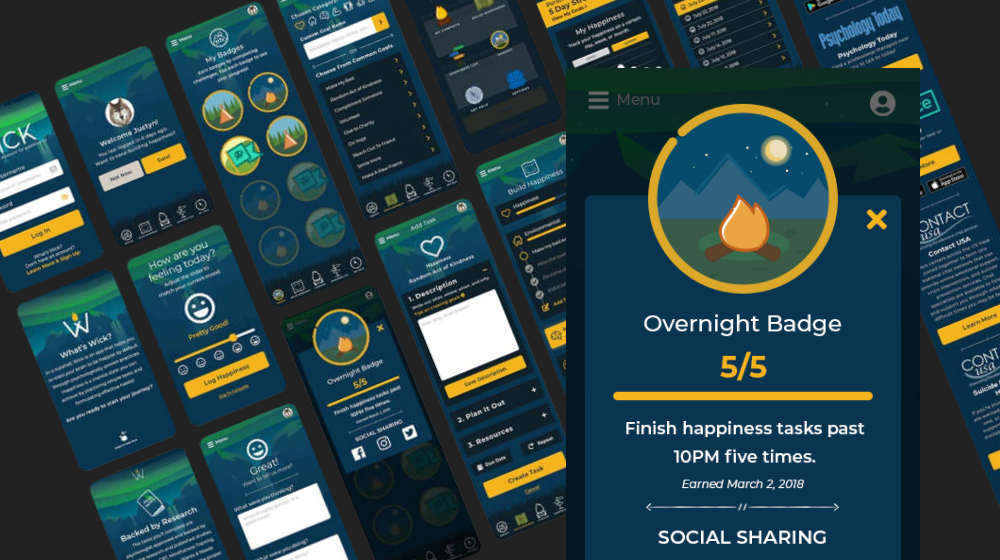

At OddOwls LLC, Wick was all about making it easy and fun to achieve your well-being goals, which led us to gamification. This approach encapsulated not only our desire to create something genuinely helpful but also highlighted our focus on a shared journey.
We landed on the tagline “An adventure to a better you,” and our mission statement became “To make the journey of self-improvement fun, simple, and accessible.”
Research
We conducted competitive research on the top 25 competing apps in the Health and Wellness space, including a SWOT analysis that examined their strengths, weaknesses, opportunities, and threats. We analyzed their user experiences, features, flows, visual language, and UI patterns.
We found that most apps employed a similar visual language, primarily using a clean, minimal aesthetic. We also noticed a lack of robust gamification, which excited us about filling that niche.
We created personas based on our ideal users. After narrowing it down to three different persona types, including our core target group of adults aged 19-40 years old and at various stages of their well-being journeys, we reached out to them for phone interviews.
We collected quantitative and qualitative data ranging from device type, hourly usage, and the number of existing or previously used health apps, to self-help/health behaviors they engage in and for how long, and gauged interest in our app.
We asked if they would consider using an application like ours, what they thought their most important positive habits were, and more. We found they had an overall lack of interest in repetitive and “boring” interactions with the applications they had been using.
UX Design
There were many ideas for names, but we settled on Wick. We imagined our app as the torch that accompanied users on their path to self-improvement. Wick was a short and catchy name that immediately brought the image of fire to mind. We chose a font with an earthy, grounded, rugged feel.
When thinking about our brand, we kept returning to the words “Journey” and “Adventure.” Most of us had played the game “Firewatch” and were inspired by its warm and exciting feelings of adventure and immersion in nature. We selected cool greens and blues in contrast to the yellow and orange CTAs to communicate this.
The language was down-to-earth, comforting, and empathetic. The sans-serif font was modern enough for a self-help app but still resembled fonts used in state parks and on hiking trails. We incorporated a fire motif into our logo, with the flame resting in the crossed arms of the W, like a fire brazier.
Once we established our relative user flows, we moved on to wire-framing, followed by lo-fi mockups and a lo-fi interactive prototype for testing. We created a design system for every UI component within the app.
UI Design

Part of our visual language included beautifully illustrated visuals throughout the entire app and iconography related to camping and adventure. We encouraged repeat app use by awarding points for completing tasks (with weighted rewards based on the difficulty of the task) and earning badges. This melded well with the friendly writing tone and positive encouragement throughout the app.
Next, we mocked up the high-resolution designs for each screen in the user flow. We fleshed out every possible use state identified in our lo-fi prototype and brought it to life using our established visual language. Using Adobe XD, we created an interactive hi-fi prototype for final testing before development.